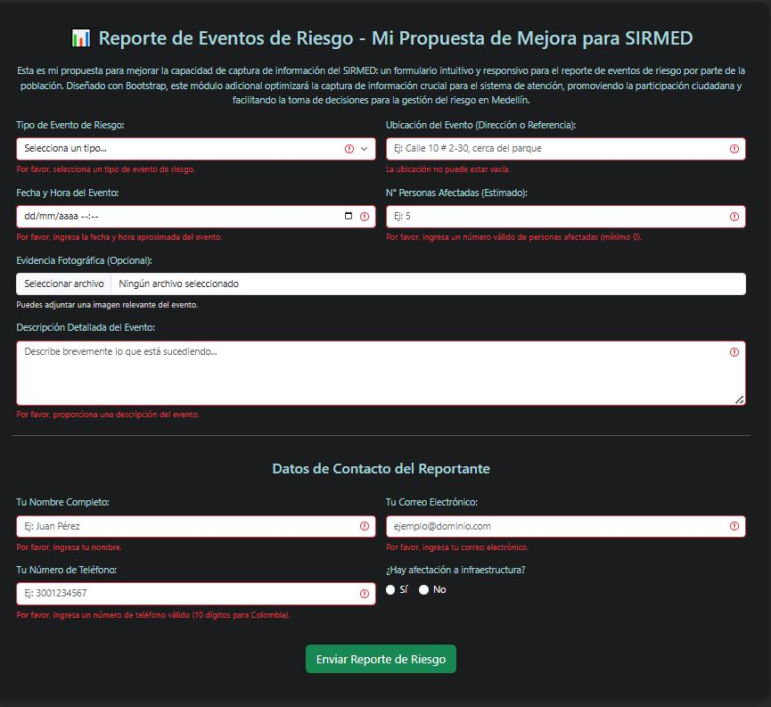
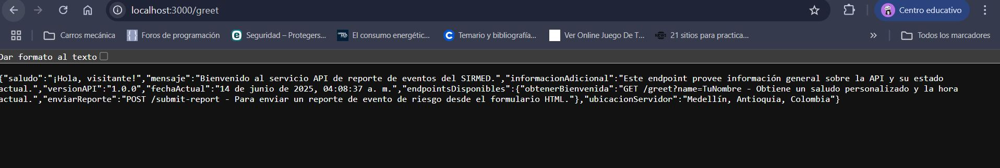

Aqui se pueden explorar las capturas de pantalla que demuestran el funcionamiento de cada componente de la propuesta.
Vista inicial de la pagina web basica, mostrando el boton interactivo y su funcionalidad de alerta.
Diseno y presentacion inicial del formulario de reporte de riesgo para el SIRMED.
Demostracion de los mensajes de validacion y feedback visual del formulario al detectar campos vacios o incorrectos.
Conexion exitosa entre el frontend y el backend: datos del formulario recibidos en la consola del servidor Node.js.
Respuesta estructurada del endpoint `/greet` de la API, demostrando su correcto funcionamiento y personalizacion.
Validacion del microservicio `/add` utilizando Postman, mostrando la respuesta JSON con la suma correcta y su codigo de estado 200 OK.
Validacion del microservicio `/add`, mostrando la respuesta JSON con la suma correcta y su codigo de estado 200 OK.
Demostracion de la aplicacion web "Hola desde JBoss" desplegada exitosamente en WildFly.
⬅️ Volver al README principal